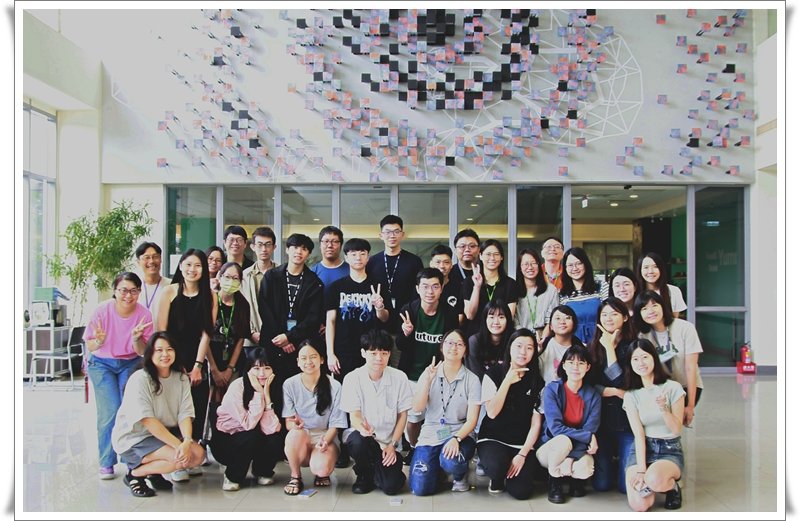
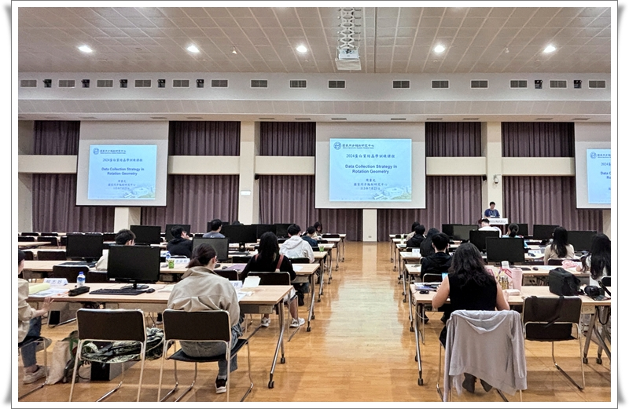
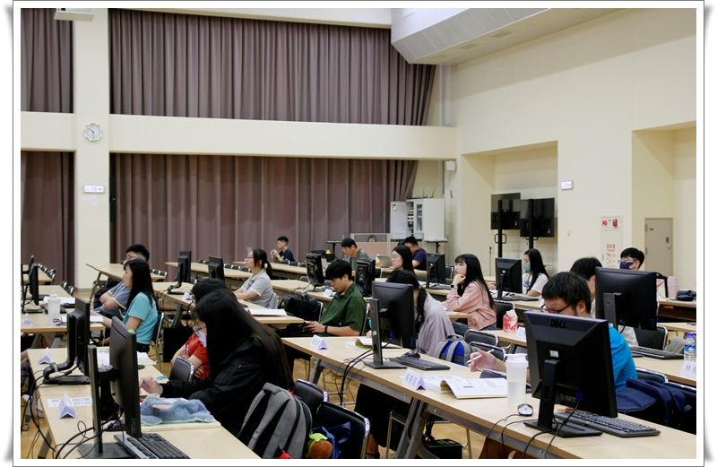
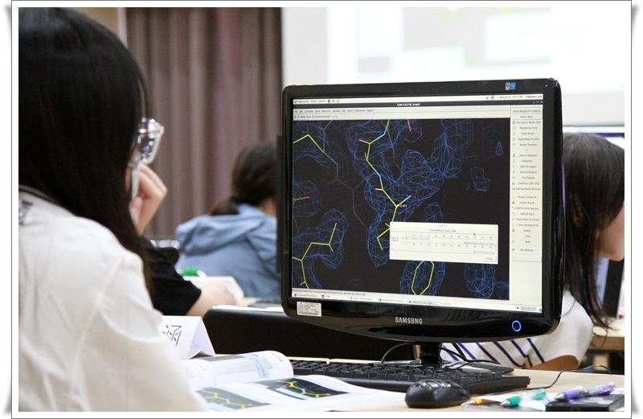
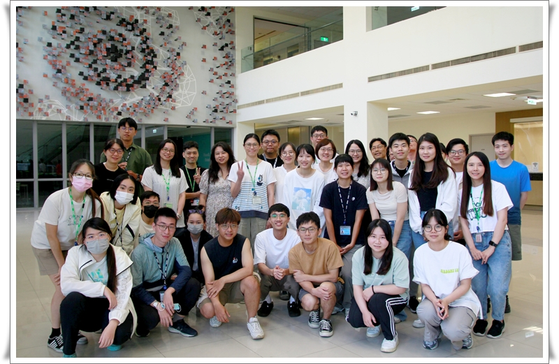
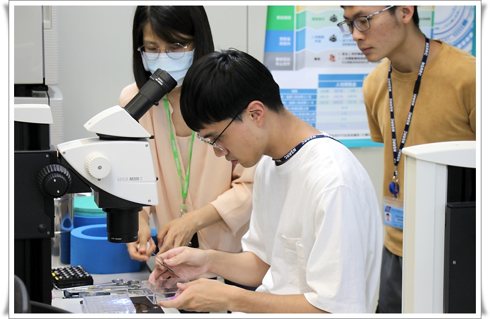
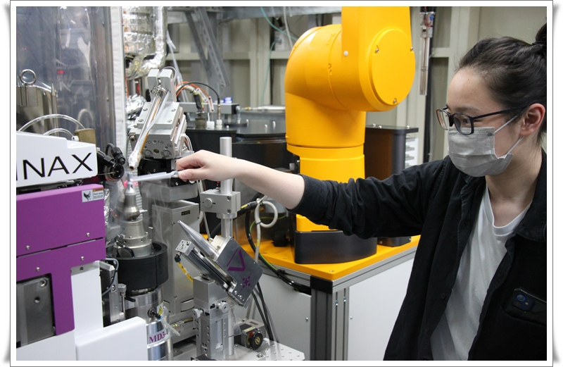
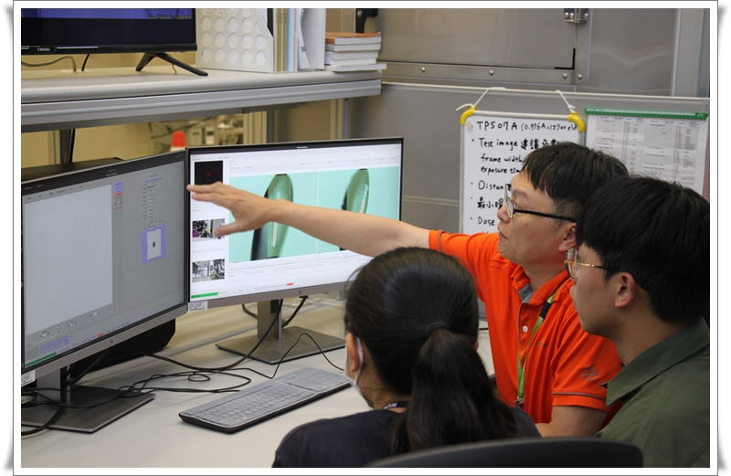

團隊與組織 Organization
Organizer
李宜靜 小姐 (Miss Yi-Ching Lee)
Lecturers
陳懿慧、黃駿翔、周重光、趙俊雄、曾建璋、劉怡君、姜政宏、葉孋嬋
TAs & Staff
李姿玲、柯金伶、姜政宏、陳怡蓉、陳懿慧、黃怡珍、黃婉婷、葉孋嬋、劉怡君、黃楨盈、陳慧珊、邱采綺
五日訓練日程 Schedule
| Day 1 | Day 2 | Day 3 | Day 4 | Day 5 |
|---|---|---|---|---|
| 蛋白質長晶與晶體對稱性 基礎繞射原理 |
數據收集策略優化 XDS 數據處理實作 |
相位問題與解法原理 SAD Phasing 實作 |
分子置換法實務 Ligand Search 實作 實驗站導覽 |
輻射傷害評估 低溫結晶學實務 |
課程滿意度分析 Satisfaction Analysis
理論講授單元 (正面評價總計)
同步輻射的重要性與PX歷史 (陳懿慧)100%
蛋白質長晶原理介紹 (黃駿翔)100%
晶體對稱性介紹 (周重光)97.2%
基礎繞射原理 (趙俊雄)100%
數據收集策略 (周重光)100%
相位問題與解法 (趙俊雄)100%
MAD/MIR/SAD 比較 (曾建璋)100%
Se-MAD/SAD與S-SAD 數據收集策略 (曾建璋)100%
分子置換法 MR (黃駿翔)100%
輻射傷害評估與對策 (劉怡君)100%
低溫結晶學實務 (姜政宏)100%
實習操作單元 (正面評價總計)
XDS 數據處理實作 (周重光)100%
SAD Phasing 實作 (曾建璋)100%
MR Ligand Search 實作 (黃駿翔)100%
晶體挑選、冷凍與上機定位 (葉孋嬋)100%
蛋白質結晶學實驗站分組導覽 (各組助教)100%
行政與生活回饋
● 報名程序： 大部分學員都覺得很棒，但有學員建議"希望可以在回傳食宿調查表後回應有沒有收到"。
● 餐食服務： 餐點變化多樣且美味。
● 助教表現： 助教教學細心、講解清楚且具耐心，能適時補充與引導、有效協助解決問題並提升學習效率。
學員回饋 Feedback
「非常有幫助，幫我建立解結構的基礎理論及操作，受益良多學到相當多新知。」
「實習課程的部分可以把各種不同情況在學生練習的當下說明，加強學生面對不同情況採取更適當的方法。」
「MR課程有很多圖片和影片搭配著講解，讓抽象的概念變得具象化。」
活動花絮 Photo Highlights
2024 年度訓練課程精彩瞬間，包含理論授課、軟體實作與實驗站導覽。

第一梯次合照

理論課程

理論課程

軟體實習課程

第二梯次合照

實驗站分組實習

實驗站分組實習

實驗站分組實習
* 註記： 2024 年度課程第一梯次期間因颱風而部分停課，迅速啟動行政應變並調整課程安排。